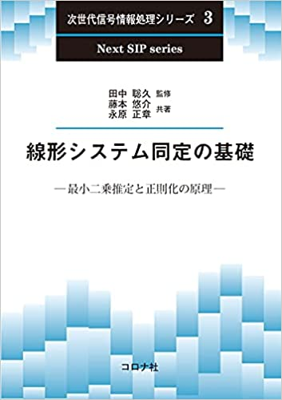

[English] [Japanese]

広島大学大学院先進理工系科学研究科 教授
インド工科大学ムンバイ校 (IIT Bombay)，インド工科大学グワハティ校 (IIT Guwahati) 客員教授
略歴
愛媛県生まれ．1998年神戸大学工学部卒業，2000年京都大学大学院情報学研究科修士課程修了，2003年同博士課程修了．博士（情報学）．
京都大学助手，助教，講師，北九州市立大学環境技術研究所教授を経て，現在広島大学大学院先進理工系科学研究科教授．また，同年よりインド工科大学ムンバイ校 (IIT
Bombay)，2020年よりインド工科大学グワハティ校 (IIT Guwahati)の客員教授を兼任． 専門分野は制御理論と機械学習．IEEE制御システム部門より国際賞である Transition to
Practice Award（2012年） および George S. Axelby Outstanding Paper
Award（2018年）をそれぞれ受賞． そのほか，計測自動制御学会や電子情報通信学会の論文賞など， 受賞多数．IEEEの上級会員
(Senior Member)．著書に Sparsity Methods for Systems and Control (Now Publishers) や「スパースモデリング」（コロナ社），
「マルチエージェントシステムの制御」（コロナ社，SICE著述賞受賞），「ネットワーク化制御」（コロナ社，SICE著述賞受賞）などがある．
近著のご紹介

新著 Sparsity Methods for Systems and Control が発行されました！
オープンアクセスですので，PDFが無料でダウンロードできます． PDFダウンロード
スライドや講義ビデオもご利用いただけます．（英語, 日本語）
著書のご紹介（画像をクリックしてください．アマゾンのページに移動します）



IEEE CSS インタビュー記事 (People in Control)
Curriculum Vitae (CV)
文献リスト（日本語の文献）
文献リスト（英語の文献）
ORCID
ResearcherID
Google Scholar Citations
ResearchGate
 （←Linkedin のページ）
（←Linkedin のページ）
広島大学 大学院先進理工系科学研究科
〒739-8521 東広島市鏡山1丁目7番1号
研究室：総合科学棟 C716
アクセス：JR西条駅より広島大学行きのバスに乗り，広大西口で下車（地図リンク）
email： nagam@hiroshima-u.ac.jp
研究内容の概略
ものを動かすための自動制御理論とものを考えるための人工知能を融合させた世界でも全く新しい理論の構築とその社会実装を研究の主な対象としています．
最近の人工知能の発展（第３次ブーム）により，人工知能は身近な存在となりました．
特に，音声や画像の認識や分類，ビッグデータ解析，IoT (Internet of Things) の枠組みにおけるエッジ・フォグコンピューティングなど，
まさに我々の周りをとりまく環境に人工知能の技術が自然に導入されています．
そのような人工知能の多くは，「ものの理解」を目指しています．すなわち，超高機能なセンサを作ろうとしていることになります．
いっぽう，人工知能による推論の結果をもとに環境に働きかけ，スマートにものを動かすためには，
高度に知能化されたアクチュエーションも必要となるでしょう．そのための基礎理論が自動制御理論なのです．
スマートなセンサ（人工知能）とスマートなアクチュエータ（自動制御）が組み合わさって初めて，スマートに動くものが作れます．
このような観点から当研究室では，世界でもきわめてユニークな「自動制御＋人工知能」の融合を目指した研究をすすめており，
特に動的スパースモデリングと呼ぶ基礎理論に関しては，世界でトップクラスの研究成果を発表し続けています．
キーワード
自動制御，人工知能，スパースモデリング，動的スパースモデリング，分散最適化，省エネルギー，マルチエージェントシステム，IoT (Internet of Things)，
サイバーフィジカルシステムズ (Cyber-physical Systems)，超スマート社会，環境技術
受賞
2021年，計測自動制御学会著述賞
2021年，Best Paper Award in Automation in 2021 IEEE International Conference on Mechatronics and Automation (IEEE ICMA 2021)
2020年，計測自動制御学会制御部門木村賞
2018年，IEEE Control Systems Society George S. Axelby Outstanding Paper Award
2016年，計測自動制御学会著述賞
2015年，Automatica, Outstanding Reviewer
2015年，IEEE 関西支部 関西支部メダル
2014年，電子情報通信学会信号処理研究専門委員会SIP特別功労賞
2014年，IEEE Senior Member
2014年，電子情報通信学会通信ソサイエティ論文賞 (Best Tutorial Paper Award)
2012年，IEEE Control Systems Society Transition to Practice Award
2012年，計測自動制御学会学会賞（論文賞）
2005年，Finalist of SICE Annual Conference Award (Yound Author's Award)
1999年，計測自動制御学会学術奨励賞
学会活動ほか
2023年〜現在，IEEE CCTA2027，General Co-Chair
2022年〜現在，IFAC NMPC2024，Awards Chair
2022年〜現在，システム制御情報学会，代議員
2022年〜現在，計測自動制御学会，会誌担当理事
2022年〜現在，Online Program Chair, IFAC WC 2023
2022年〜現在，Tutorial/Workshop Chair, SICE AC 2022
2022年～現在，SICE JCMSI Editorial Board， Editor
2022年～現在，ひびきのAI社会実装研究会，会長
2021年〜現在，Associate Editor, Advanced Robotics
2019年〜現在，Asian Journal of Control, Associate Editor
2019年～現在，計装研究会，AI専門部会，顧問
2018年〜現在，IEEE Technical Committee on Networks and Communications, Member
2014年～現在，IFAC Technical Committee 2.1 Control Design, Member
2014年～現在，IEEE Signal Processing Society, Signal Processing Theory and Methods (SPTM) Technical Committee, Affiliate Member
2013年～現在，IEEE Control Systems Society Conference Editorial Board, Associate Editor
過去の活動はこちら
研究助成
科学研究費 挑戦的研究(萌芽)，２０２０年度ー２０２2年度
科学研究費 基盤研究(B)，２０２０年度－２０２２年度
科学研究費 基盤(B)（研究分担者）２０１９年度ー２０２１年度
JST 未来社会創造事業 超スマート社会の実現領域 探索研究（研究分担者），２０１７年度ー２０１８年度
科学研究費 国際共同研究加速基金（国際共同研究強化），２０１７年度ー２０１８年度
科学研究費 基盤研究(B)，２０１５年度－２０１８年度
科学研究費 挑戦的萌芽研究，２０１５年度－２０１６年度
科学研究費 新学術領域研究（公募研究），２０１６年度－２０１７年度
科学研究費 新学術領域研究（公募研究），２０１４年度－２０１５年度
大川情報通信基金 研究助成，２０１４年度
カワイサウンド技術・音楽振興財団 研究助成，２０１３年度
科学研究費 基盤研究(C)，２０１２年度－２０１４年度
科学研究費 若手研究(B)，２０１０年度－２０１１年度
科学研究費 若手研究(B)，２００４年度－２００６年度
日本学術振興会 特別研究員（ＤＣ２），２００２年度